Telemetria 2026 - 2027
Stasi Samuele - 25/09/2026
Obiettivo del progetto
L'obiettivo è progettare produrre e programmare una scheda di telemetria che supporti sia l'acquisizione dati in locale che la telemetria wireless. La motivazione che ci ha spinto ad iniziare il presente progetto è la necessità di avere un supporto tecnologico più robusto, sia dal punto di vista elettrico che dal punto di vista della trasmissione dati.
La scheda utilizzerà una trasmissione LoRa a 868MHz ad alta potenza per garantire un'adeguata portata del segnale e una relativamente alta sopportazione dei disturbi elettromagnetici. A supporto di future necessità verrà scelto un modulo di trasmissione che sia in grado di trasmettere anche segnali in modalità FSC, che gli sbloccano una capacità di canale molto più ampia se ci si trova entro una data distanza. Maggiori informazioni verranno fornite nel prossimo capitolo.
Per la persistenza in locale si è optato per una semplice scheda MicroSD.
I dati verranno ricevuti dalla scheda attraverso una linea CAN 2.0A/2.0B
Componenti di base
Riguardi
Questo progetto tiene conto di possibili sviluppi futuri; avere un occhio di riguardo per queste cose permette di avere un progetto molto solido e di risparmiare tempo e soldi per eventuali modifiche
E22-900M30S - SX1262 868/915MHz Wireless Module
Questo modulo è un'evoluzione dei prodotti precedenti e contiene un modulo avanzato per la comunicazione LoRa. Le principali caratteristiche sono le seguenti:
- La distanza di comunicazione arriva fino a 12Km
- Potenza di trasmissione massima 1W, modificabile via software
- Supporto per la banda globale ISM 868/915MHz
- Supporto per un data-rate che varia da 0.018-62.5kbps in modalità LoRa
- Supporto fino a 300kpbs in FSK mode
- FIFO di 256Byte per la cache
- Supporto per alimentazione da 2.5V~5.5V, 5V+ garantiscono la massima performance
- Supporto antenna IPEX
Da questi dati risulta palese il motivo della scelta: anche se la modalità FSK non è disponibile su distanze elevate, il chip LoRa può continuare ad operare con minimi cali di segnale per lunghi tratti e sicuramente su tutto il tracciato di gara o di test. Inoltre la banda lo rende la scelta ideale perché è l'unica che può essere utilizzata quasi in tutto il mondo, anche in vista di ripetute tappe estere.
La sua alimentazione varia dai 3.3V ai 5.5V, garantendo il funzionamento durante cali di voltaggio e in caso ci fosse la necessità di farlo lavorare con un minor consumo di energia (ovviamente al costo di restringere il range di trasmissione). Comunica con il resto della scheda attraverso una linea SPI a 3.3V, permettendo di essere controllato semplicemente da qualsiasi microcontrollore mainstream sul mercato. Il consumo di corrente varia dai 14mA in sola ricezione ai 650mA istantanei in trasmissione.
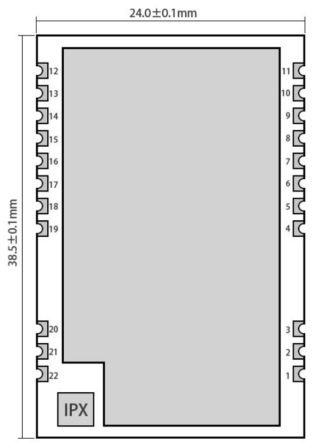
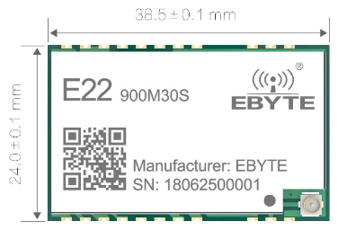
ESP32-S3-WROOM-1U (N8R2)
Come microcontrollore è stato scelto un ESP32-S3-WROOM-1U nella sua versione da 8MB di flash e 2MB di PSRAM. La dicitura 1U sta ad intendere che non è presente l'antenna sulla PCB del modulo, ma un connettore per antenna esterna. Sia questo modulo che il modulo LoRa presentano la stessa soluzione per antenna esterna per il semplice fatto che un body costruito in materiale composito, soprattutto fibra di carbonio, essendo conduttivo potrebbe totalmente o parzialmente bloccare le emissioni elettromagnetiche. L'antenna esterna permette un superiore guadagno essendo in linea d'aria con il ricevitore.
Sebbene la telemetria a lungo raggio sia affidata al modulo LoRa, l'antenna dell'ESP32-S3 sblocca le funzionalità radio native del chip con Wi-Fi 4 a 2.4 GHz e Bluetooth 5.0 Low Energy. Questa scelta architetturale apre a due scenari fondamentali per l'operatività in pista:
-
Scaricamento dati e OTA: Il Wi-Fi permette di scaricare i log pesanti ad alta velocità quando la vettura rientra ai box, o di eseguire aggiornamenti firmware OTA senza dover smontare la scocca per accedere fisicamente alla porta USB della centralina.
-
Diagnostica rapida: Il Bluetooth LE può essere utilizzato per connettere rapidamente un tablet o uno smartphone per visualizzare lo stato della vettura, gli errori o i valori dei sensori durante le fasi di ispezione o di setup pre gara.
Matrice GPIO e Flessibilità di Routing
Un fattore decisivo nella scelta della famiglia ESP32-S3 è l'avanzata matrice GPIO. A differenza dei microcontrollori tradizionali dove le periferiche hardware sono legate a pin fissi, l'ESP32-S3 permette di instradare quasi ogni segnale digitale (SPI, UART, I2C, PWM) su qualsiasi pin libero. Questa caratteristica ha semplificato drasticamente lo sbroglio (routing) del PCB: ha permesso di sbrogliare le piste del bus SPI verso la MicroSD e le linee di comunicazione verso il modulo LoRa in modo diretto e parallelo, riducendo al minimo l'uso di via passanti e migliorando l'integrità dei segnali.
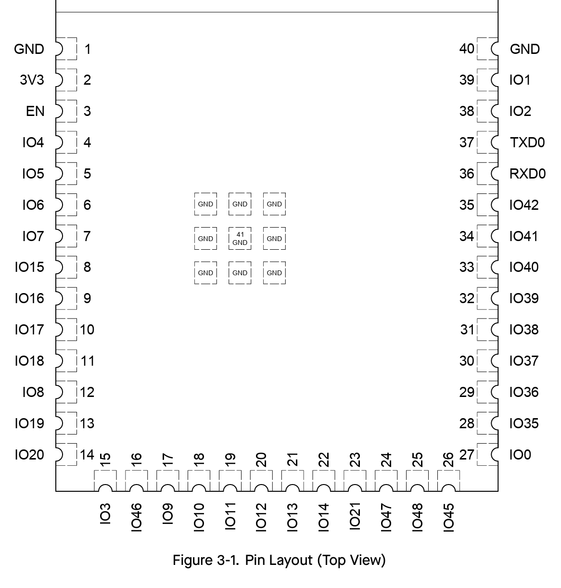
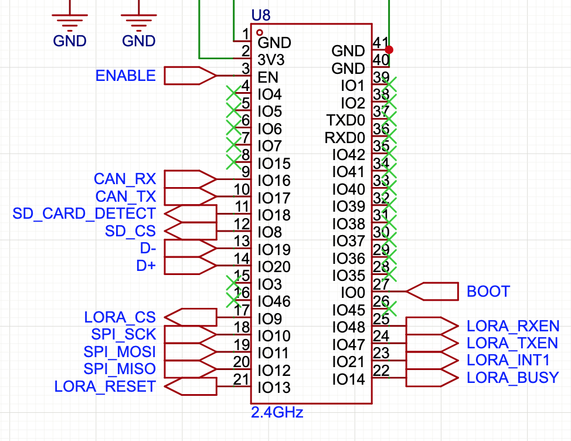
Le immagini sopra mostrano il layout fisico del modulo ESP32-S3 e la corrente configurazione di pinout scelta per ottimizzare lo sbroglio in fase di progettazione della PCB.
Controller CAN nativo (TWAI)
Il microcontrollore integra nativamente un controller TWAI (Two-Wire Automotive Interface), pienamente compatibile con le specifiche CAN 2.0A e 2.0B. Grazie a questo hardware interno, la scheda non necessita di controller CAN esterni, ma richiede unicamente un transceiver fisico che è stato identificato essere il componente L9616 per interfacciarsi ai livelli di tensione del bus della vettura, riducendo i punti di fallimento, la latenza di lettura e l'ingombro sul PCB.
Molto probabilmente su questa linea verrà utilizzato il CAN 2.0B per garantire il massimo flusso di dati con una minima quantità di bit di servizio come i bit di id o terminazione. Non necessario sulle altre linee perché non è richiesto avere tanti dati in sequenza quanto avere il dato giusto al momento giusto.
Consumi
A livello energetico, l'ESP32-S3 richiede una gestione termica adeguata implementata tramite pad termico e vie di dissipazione sul PCB. I consumi variano in base allo stato:
- Deep Sleep: ~7 µA
- Elaborazione attiva (Radio Off): ~20-30 mA
- Picco di trasmissione Wi-Fi: Fino a ~350 mA
L9616 CAN Transceiver
Per il funzionamento della scheda si è resa necessaria la scelta di un transceiver CAN che fosse affidabile e che permettesse di gestire il data rate in modo dinamico; in questo caso il modello L9616 prodotto da ST Microelectronics.
I consumi di corrente sono ridotti, con picchi di massimo 80mA durante la fase di trasmissione di un bit dominante. La sua tolleranza elettrica lo rende anche ottimo per future implementazioni su soluzioni che utilizzano il CAN a 5V, grazie a un'ampia flessibilità dei rail di alimentazione che può sopportare transitori dai -0.3V ai +7V (come da specifiche assolute).
ADP3339 LDO Regulator
Il regolatore di tensione è una parte importantissima del progetto, perché mette insieme considerazioni riguardanti l'ambiente di funzionamento e le necessità degli altri componenti sulla scheda. In primo luogo bisogna considerare le emissioni EMI della scheda che monta non una ma ben due antenne ad alte prestazioni su frequenze diverse: l'ESP32 genera un segnale wifi e un segnale bluetooth che hanno il potenziale per generare dei disturbi indotti nelle piste del resto della scheda, aggiungendosi anche al disturbo emesso dall'inverter e dal chip LoRa. La scelta è ricaduta su un regolatore lineare LDO perché non aggiunge ulteriori disturbi alle alimentazioni rispetto ad un regolatore DC-DC switching e, con qualche accortezza, può non essere un problema dal punto di vista termico.
La corrente di picco del ADP3339 raggiunge 1.5A, il che lascia un margine comodo per l'alimentazione di ESP32, transceiver CAN e MicroSD. Inoltre l'architettura Low Dropout dell'ADP3339 garantisce la stabilizzazione a 3.3V anche se la tensione di ingresso a 5V dovesse subire fluttuazioni o cali dovuti a picchi di assorbimento su altre centraline collegate allo stesso cablaggio della vettura, assicurando la continuità della telemetria in ogni condizione di gara.
Una scelta importante è stata quella di dividere l'alimentazione del modulo LoRa per attingere direttamente dall'alimentazione principale a 5V della scheda che arriva dall'esterno. Questo evita all'LDO di farsi carico dei 650mA di picco che viene consumato in trasmissione, lasciando un'alimentazione pulita e senza sbalzi di tensione al microcontrollore.
Schematico e PCB
In un ambiente duro come quello della Formula Student ogni componente deve essere scelto e posizionato con cura per evitare una serie di problematiche note che possono essere:
- Disturbi elettromagnetici
- Vibrazioni
- Temperature
Nei prossimi capitoli verranno analizzati in dettaglio i blocchi logici che compongono lo schematico e la PCB, motivando le scelte di design.
Stack-Up e piani
Usando una struttura a 4 layer, il progetto fa un salto qualitativo necessario per supportare la presenza di un trasmettitore LoRa da 1W, un microcontrollore ad alta frequenza e un bus differenziale CAN. Lo stack-up scelto è stato pensato per massimizzare l'integrità dei segnali e abbattere le emissioni irradiate.
| No. | Name | Type |
|---|---|---|
| 1 | Top | Signal |
| 2 | GND | Plane Zone |
| 3 | 3V3_MAIN | Plane Zone |
| 4 | Bottom | Signal |
La scheda è stratificata secondo la seguente logica:
-
Layer 1 - Top (Signal): Dedicato ai componenti principali e al routing dei segnali critici e ad alta velocità (come le coppie differenziali del CAN e dell'USB, e il bus SPI). Sbrogliare questi segnali sul layer Top garantisce che scorrano fisicamente adiacenti al piano di massa solido sottostante, minimizzando l'induttanza del loop.
-
Layer 2 - Inner 1 (GND Plane): Configurato come Plane Zone dedicata interamente alla massa. Avere un piano di massa continuo subito sotto i segnali ad alta velocità è fondamentale perché fornisce il percorso di ritorno più breve possibile per le correnti ad alta frequenza, abbassando le emissioni elettromagnetiche e proteggendo la scheda dai disturbi esterni dell'inverter. Inoltre agisce come un massiccio dissipatore termico per l'intera scheda.
-
Layer 3 - Inner 2 (3V3_MAIN Plane): Questo layer interno è dedicato alla distribuzione della potenza a 3.3V. Utilizzare un intero piano per la potenza (invece di semplici piste) garantisce un'impedenza bassissima, permettendo all'ESP32 e alla MicroSD di assorbire picchi di corrente istantanei senza generare cali di tensione (voltage drops). Inoltre, l'accoppiamento capacitivo naturale che si crea tra questo piano e il piano di massa (Inner 1) adiacente funge da enorme condensatore di disaccoppiamento distribuito, filtrando ulteriormente il rumore ad alta frequenza.
-
Layer 4 - Bottom (Signal): Utilizzato per i segnali secondari a bassa velocità e per completare il posizionamento dei componenti ingombranti o critici termicamente come il regolatore LDO. Instradare le piste trasversali su questo layer permette di evitare tagli sul layer Top, preservando la continuità del piano di massa interno.
Power stage
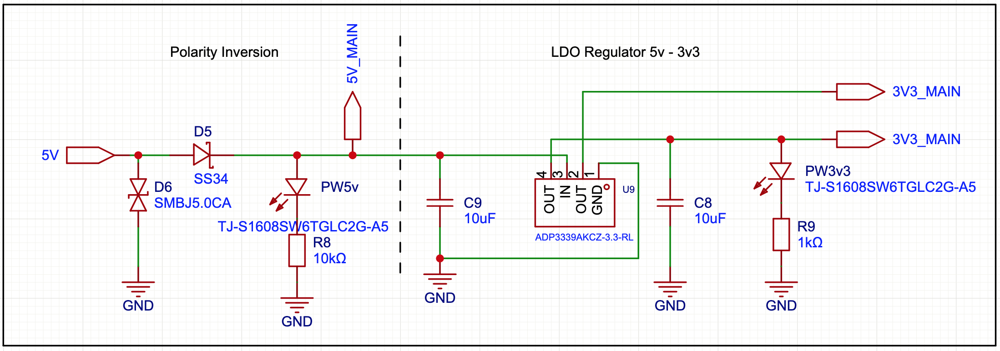
Il power stage è diviso in due blocchi concettuali, le protezioni per sovratensioni e inversioni di polarità e il regolatore LDO.
Analizzando il primo blocco si può notare che l'inversione di polarità è stata gestita attraverso il diodo schottky D5 che è stato dimensionato per sopportare la somma delle correnti dei singoli moduli, lasciando ovviamente un ampio margine. Non serve essere precisi con le correnti perché si rischierebbe di bruciare il diodo se si eccedono le sue specifiche, inoltre serve solo come protezione verso le inversioni di polarità, non è fatto per diventare un e-fuse.
Il secondo componente importante è il diodo TVS (Transient Voltage Suppressor) bidirezionale D6, che serve per sopprimere i transienti(picchi momentanei) di tensione indotti nell'alimentazione dai disturbi. Il TVS è dimensionato per rimanere inattivo alla tensione nominale, ma interviene rapidamente scaricando a massa i picchi prima che possano friggere il regolatore o, peggio, danneggiare il modulo LoRa (che ha un limite operativo massimo di 5.5V continuativi).
Nel secondo blocco è presente il regolatore che abbassa la tensione dai 5V ai 3V3. La peculiarità di questo regolatore è che la tensione fissa di uscita evita l'aggiunta del partitore di tensione tra l'uscita e il pin di regolazione. Il datasheet indica che per mantenere la tensione in uscita stabile è necessario mettere due condensatori da 1\(\micro F\) in ingresso e in uscita. In questo caso nono stati messi da 10 perché in un ambiente rumoroso come il nostro è meglio non rischiare.
Gli ultimi componenti sono i LED di stato, che indicano l'accensione del power stage e dell'alimentazione principale.
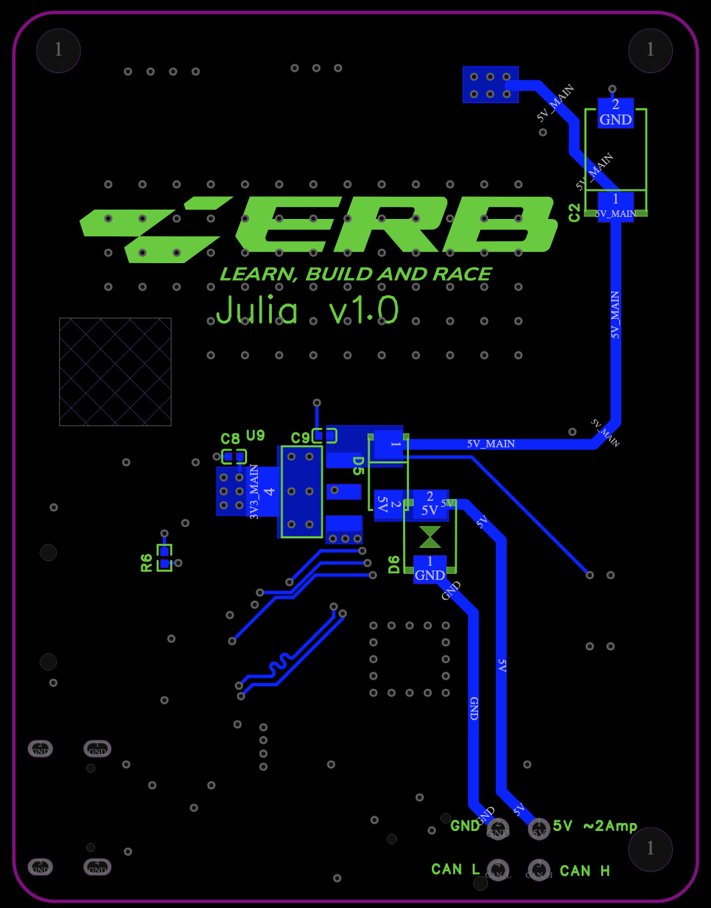
L'immagine sopra mostra il layout implementato per il regolatore. Tutto il power stage è stato posizionato sul layer inferiore della scheda per risparmiare spazio e per ottimizzare la dissipazione termica.
L'alimentazione a 5V arriva dal connettore nella parte inferiore e viene instradata attraverso piste da 0.8mm, passando prima attraverso i componenti D5 e D6 per le protezioni, per poi immettersi nei pin di ingresso del regolatore.
Gestione Termica e Piani di Rame
Poiché l'ADP3339 è un regolatore lineare, l'abbassamento di tensione da 5V a 3.3V comporta una dissipazione di energia sotto forma di calore, proporzionale alla corrente assorbita. Per smaltire questo carico termico senza l'ausilio di dissipatori meccanici esterni, il layout sfrutta attivamente i piani di rame del PCB. I pin di massa del regolatore e dei condensatori di filtro sono ancorati a un poligono di rame dedicato. Questo piano superficiale agisce da primo dissipatore, allontanando rapidamente il calore dal package del componente.
Via Termici e Transizioni di Potenza
Per massimizzare l'efficienza termica e garantire percorsi a bassissima impedenza per le correnti elevate, il layout fa un uso estensivo di via:
-
Via Termici: All'interno e in prossimità del piano di rame dell'LDO sono stati piazzati multipli via passanti collegati al piano di massa interno continuo (Inner 1 - GND). Questi via fungono da "tubi termici", trasferendo il calore dal layer inferiore ai layer interni, permettendo all'intera massa della scheda di funzionare come un grande radiatore.
-
Via per Alte Correnti: Nelle zone in cui l'alimentazione deve necessariamente cambiare layer (ad esempio per portare i 3.3V all'ESP32), è stato evitato l'uso di un singolo via. Per gestire i picchi transitori, le transizioni avvengono tramite cluster di via multipli. Questa ridondanza abbassa la resistenza e l'induttanza parassita del collegamento, prevenendo surriscaldamenti localizzati e cadute di tensione sui rail di alimentazione che causerebbero riavvii improvvisi del microcontrollore.
Linea CAN
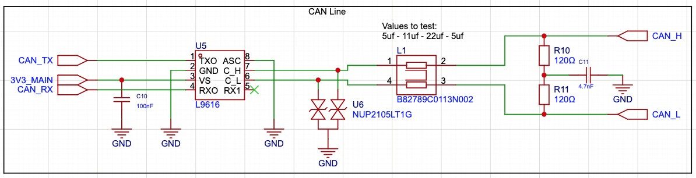
A protezione del transceiver contro i forti disturbi elettromagnetici dell'inverter, la linea fisica è stata equipaggiata con un array di diodi TVS U6 e un Common Mode Choke L1 con footprint standardizzato, permettendo di testare dinamicamente induttanze diverse.
Sulla linea 3V3 è stato anche inserito in condensatore di decoupling, che permette di assorbire sbalzi di corrente e alcuni disturbi. L'ultimo elemento importante per far funzionare la linea CAN sono le resistenze di terminazione da 120 ohm, che vengono inserite sulla linea differenziale.
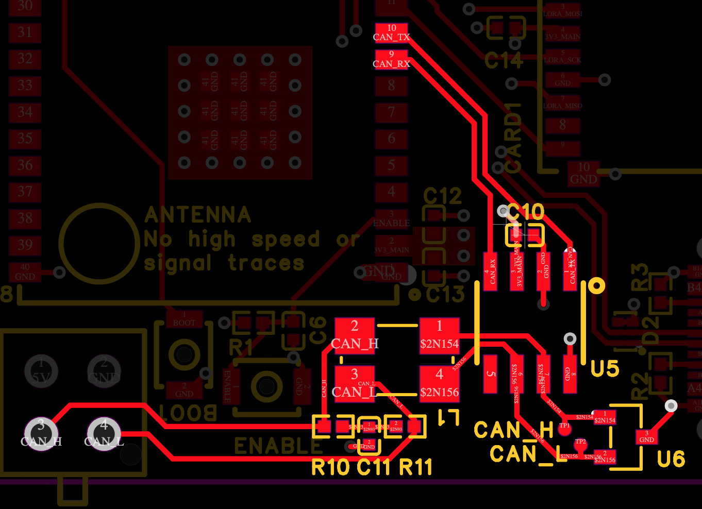
i segnali CAN_H e CAN_L sono segnali differenziali e, in quanto tali, sono state instradate in modo parallelo e accoppiato per tutta la lunghezza della pista. il segnale segue precisamente un ordine fisico che è il seguente: Connettore \(\rightarrow\) Terminazione Split \(\rightarrow\) Common Mode Choke \(\rightarrow\) Diodo TVS \(\rightarrow\) Transceiver.
Il filtro di modo comune è l'elemento più critico per sopravvivere al rumore dell'inverter. Spesso è impossibile calcolare l'induttanza perfetta, poiché la capacità parassita del cablaggio e dei diodi TVS può innescare circuiti LC risonanti che distorcono il segnale. Per mitigare questo rischio si è optato per una strategia flessibile: è stato previsto un footprint SMD standard 1210 per il Common Mode Choke. Questo permette di testare diversi valori di induttanza (es. 11 µH, 22 µH, 51 µH) o di sostituire il filtro con resistenze da 0 Ohm o jumper qualora si rilevasse una distorsione del segnale dovuta a un'induttanza eccessiva (come già successo su altre schede).
LoRa
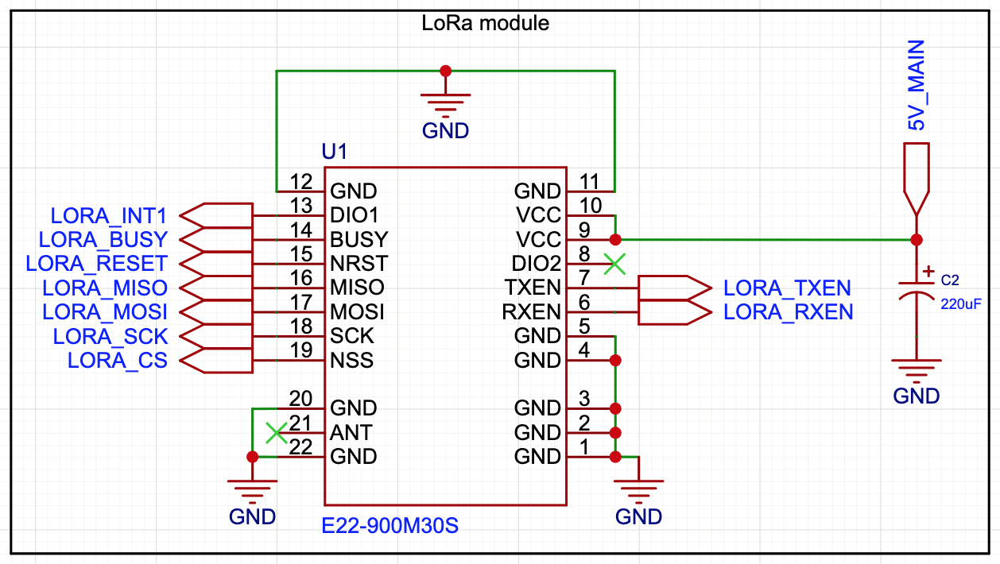
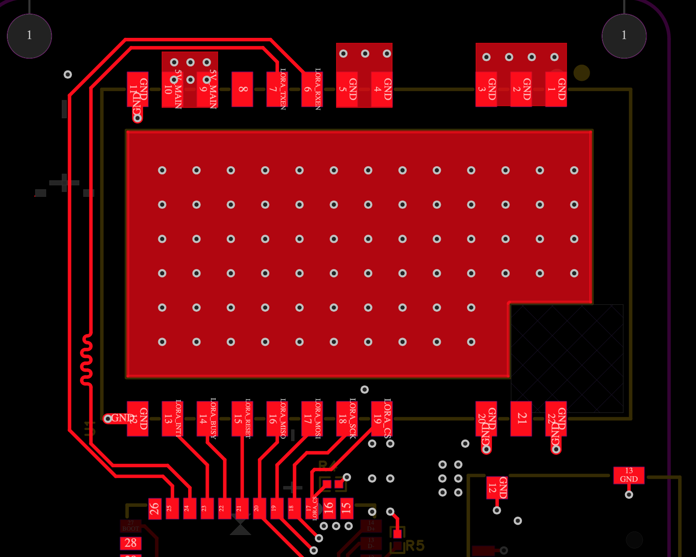
L'integrazione di un trasmettitore da 1W (E22-900M30S) direttamente su un circuito compatto pone sfide severe in termini di integrità del segnale e immunità ai disturbi. Un segnale RF ad alta potenza può facilmente accoppiarsi con le piste vicine, corrompendo i dati del bus SPI o inducendo reset anomali nel microcontrollore. Per evitare questo scenario, il layout del modulo LoRa è stato progettato attorno a tre strategie chiave:
- Schermatura RF e Stitching: Il modulo integrato che contiene l'antenna LoRa ha al di sopra una schermatura metallica che impedisce l'uscita di radiofrequenze se non dall'antenna. Per riprodurre un effetto simile, sotto il modulo è stata introdotto un piano continuo di rame sul primo layer, collegato al piano di massa da un array di via. Questa struttura crea una vera e propria gabbia di faraday che intrappola al suo interno tutti i segnale che vengono Generati dal modulo.
- Keepout zone: Direttamente sotto il connettore dell'antenna è stata instaurata una keepout zone, che impedisce il piazzamento di aree di rame, componenti e piste direttamente sotto la stessa. Se si inserisce un piano di rame, le onde elettromagnetiche si ripiegano direttamente verso GND, il che oltre a generare riflessioni rischia di indebolire il segnale.
- Power Delivery: il modulo LoRa è alimentato in modo indipendente dalla linea a 5V per preservare la stabilità dell'LDO. Tuttavia, trasmettere pacchetti a 1W richiede picchi di assorbimento transitori molto rapidi, fino a 650mA. Per evitare che l'induttanza parassita delle piste a 5V rallentasse l'erogazione di corrente causando cali di tensione, il condensatore di bulk primario C2 è stato posizionato fisicamente a ridosso del pin VCC del modulo. Questo condensatore funge da riserva di energia locale, garantendo la massima potenza senza stressare il cablaggio generale.
Le due piste a sinistra sono i due segnali LORA_TXEN e LORA_RXEN, che servono a settare la modalità dell'antenna in trasmissione e ricezione. Affinché questi comandi arrivino in modo perfettamente sincrono, è stata applicata la tecnica del length tuning (ricciolo a serpentina sulla pista di sinistra) per equalizzarne la lunghezza e annullare le differenze di tempo di propagazione. Infine, le connessioni nella parte inferiore costituiscono il bus SPI ad alta velocità, instradato in modo compatto e diretto per trasportare i comandi e i dati tra il modulo LoRa e il microcontrollore.
Microcontrollore
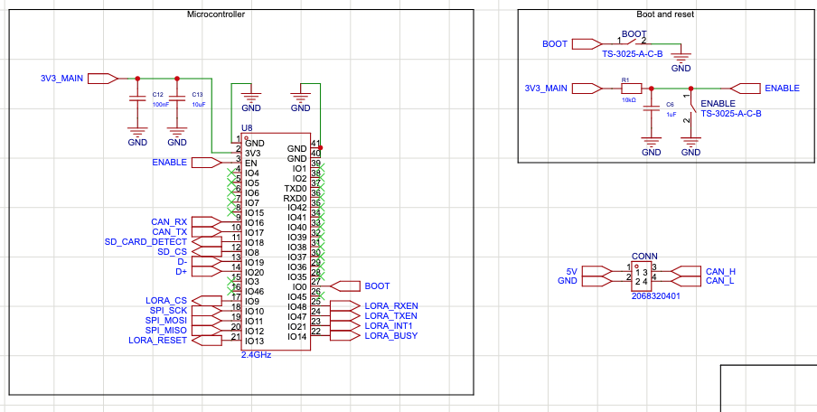
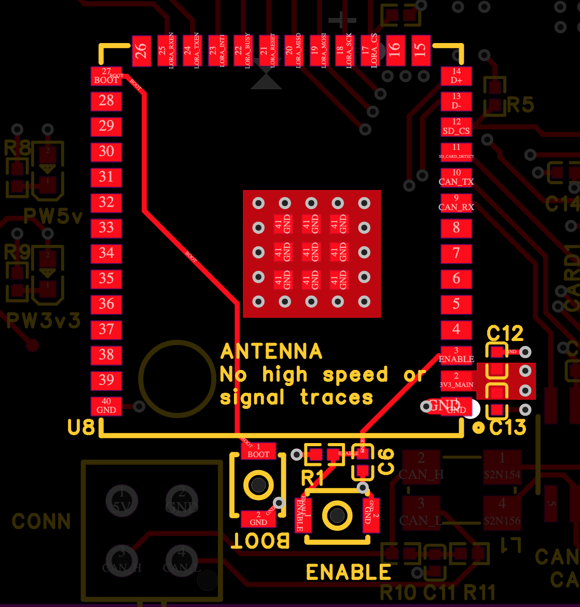
Al centro del footprint dell'ESP32 è ben visibile il grande pad termico esposto. Invece di affidare la dissipazione alla sola superficie del layer Top, il pad è stato ancorato al piano di massa interno tramite un array geometrico di 9 via passanti. Questa soluzione abbassa la resistenza termica del componente, trasferendo il calore generato durante le trasmissioni Wi-Fi o i calcoli intensivi agli strati interni, sfruttando l'intera massa di rame del PCB come radiatore.
Un elemento critico per l'affidabilità di qualsiasi microcontrollore è il power-on reset. Come visibile dallo sbroglio evidenziato in rosso, il pin ENABLE dell'ESP32 è controllato da una specifica rete RC, composta dalla resistenza di pull-up R1 e da un condensatore a massa. Questo circuito hardware ritarda l'accensione del microcontrollore di qualche millisecondo rispetto all'erogazione dell'alimentazione. In questo modo si garantisce che l'ESP32 inizi l'esecuzione del firmware solo quando il piano dei 3.3V è perfettamente stabilizzato, prevenendo crash, stati logici indefiniti o scritture corrotte sulla MicroSD all'avvio. Sono stati inoltre integrati due pulsanti tattili BOOT ed ENABLE per consentire il reset manuale e l'ingresso forzato in modalità bootloader per il flashing del firmware durante lo sviluppo del software.
Sui pin di alimentazione sul lato destro del chip, si notano i condensatori di decoupling. La loro vicinanza ai pin VCC non è casuale: serve a minimizzare l'induttanza parassita delle piste. Questi condensatori agiscono come serbatoi che forniscono energia istantanea alle porte logiche interne dell'ESP32 durante le rapide commutazioni, sopprimendo al contempo il rumore ad alta frequenza prima che possa inquinare il piano di alimentazione 3V3_MAIN.
MicroSD
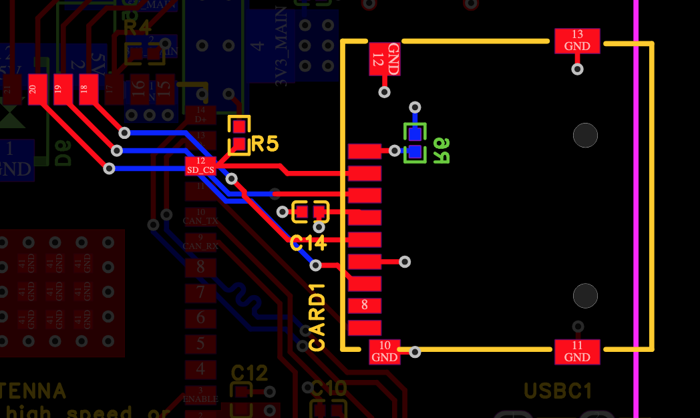
A livello meccanico, il socket per la MicroSD è stato collocato strategicamente lungo il perimetro esterno del PCB. Questa scelta non risponde solo a criteri di sbroglio, ma è una precisa esigenza di usabilità in pista: permette l'estrazione rapida della scheda senza dover smontare la centralina. In questo modo è possibile scaricare fisicamente i log della telemetria sul PC qualora lo scaricamento OTA tramite Wi-Fi non fosse utilizzabile.
Gestione della Banda
Questa sezione del documento punta a verificare che il carico di dati sia in linea con la capacità di canale di LoRa. Qualora non fosse sufficiente si esploreranno alcuni possibili algoritmi per introdurre un datarate variabile basato sulle misurazione in tempo reale della potenza del segnale da parte del modulo di trasmissione integrato.
Il firmware dell'ECU gestisce l'acquisizione dei dati serializzando due pacchetti strutturati in C privi di padding grazie all'istruzione __attribute__((packed)), entrambi validati da un codice a ridondanza ciclica CRC16 per identificare e scartare i pacchetti corrotti:
-
Il primo pacchetto
TelemetryPacket_tarriva dalla centralina e contiene i dati dei sensori, i parametri dell'inverter, le macchine a stati e le elaborazioni dinamiche che fa la ECU. Il pacchetto pesa140bytee viene trasmesso a 200Hztypedef struct __attribute__((packed)) { // --- Telemetry packet id and metadata --- uint8_t startByte1; // 0xCC uint8_t startByte2; // 0x11 uint32_t timestamp; // Incremental // --- Wheel velocities --- float front_left_velocity; // km/h float front_right_velocity; // km/h float rear_left_velocity; // m/s float rear_right_velocity; // m/s // --- Suspension length --- // The sensor is implemented but the measurement unit is at this time unknown // 0<->4096 float front_left_suspension; // To be defined float front_right_suspension; // To be defined // --- APPS --- uint16_t accelerator1; // 0<->4096 uint16_t accelerator2; // 0<->4096 float accelerator_mapped; // 0<->1 // --- Brake --- uint16_t brake1; // 0<->4096 uint16_t brake2; // 0<->4096 // --- Steer --- float steer; // Degrees // --- Digital in --- uint8_t sdc; // Digital 0/1 uint8_t ready_to_drive_button; // Digital 0/1 uint8_t ecu_reset_button; // Digital 0/1 uint8_t tractive_system_on_button; // Digital 0/1 // --- Battery (EMMA) --- float emma_current; // A float emma_voltage; // V float emma_yaw; // deg/s uint16_t emma_error; // Emma error struct // --- Vehicle Dynamics & Powertrain Targets --- float mean_velocity; // m/s float real_yaw_rate; // deg/s float total_torque_request; float torque_tv_L; // nm float torque_tv_R; // nm float slip_L; // Adimensional raw float slip_R; // Adimensional raw float torque_reduction_L; float torque_reduction_R; float final_torque_target_L; // nm float final_torque_target_R; // nm // --- Inverter Internal Data --- int16_t inv_L_torqueCurrent; // Raw data A? int16_t inv_L_magnetizingCurrent; // Raw data A? int16_t inv_L_tempMotor; // °C int16_t inv_R_torqueCurrent; // Raw data A? int16_t inv_R_magnetizingCurrent; // Raw data A? int16_t inv_R_tempMotor; // °C // --- External Thermal Data --- float left_coolant_temp; // °C float right_coolant_temp; // °C // --- State machines --- uint8_t left_inverter_fsm; // FSM struct uint8_t right_inverter_fsm; // FSM struct uint8_t tractive_system_fsm; // FSM struct // --- ECU mode --- uint8_t ECU_Mode; // ECU mode struct uint16_t IMDInsulationValue; // KOhm // --- Inverter diagnostics (AMK diagnostic number, cfr. INVERTER_Errors.h) --- // 0 = nessuna diagnostica attiva. E' lo stesso numero mostrato sul display // dell'inverter: si decodifica a terra con la tabella di INVERTER_Errors.h uint16_t inv_L_errorInfo; uint16_t inv_R_errorInfo; // --- CRC for corrupted packages --- uint16_t crc16; // CRC16 } TelemetryPacket_t; -
TelemetryPacket_EMMA_tpesa 81 Byte e contiene lo Stato di Carica, le matrici di tensione e temperatura delle singole celle, e il registro dei moduli attivi per la diagnostica del pacco batteria. La sua frequenza di trasmissione è di 5Hztypedef struct __attribute((packed)){ // --- Telemetry packet id and metadata --- uint8_t startByte1; // 0xEE uint8_t startByte2; // 0x11 uint32_t timestamp; // --- Module states --- uint8_t state_of_charge; // percentage uint8_t module_voltage[14]; // V uint16_t module_temperatures[28]; // degrees 0.1 °C uint16_t onlineModules; // --- CRC for corrupted packages --- uint16_t crc16; } TelemetryPacket_EMMA_t;
Per calcolare la banda:
TelemetryPacket_t: \(140 b * 200 = 28.000 b/s = 224 kbps\).TelemetryPacket_EMMA_t: \(79 b * 5 = 395 B/s = 3,16 kbps\).- Totale flusso dati utile: 227,16 kbps.
Analisi Bottleneck Sommando i flussi dei due pacchetti di telemetria si ottiene un totale di flusso di 227,16kbps, che pur essendo ridotto, è comunque eccessivo per il modulo LoRa che nella sua modalità normale ha una capacità di canale massima teorica di 62,5kbps. Risulta quindi fisicamente impossibile trasmettere l'intero flusso dati in tempo reale via radio senza incorrere in saturazione della banda, collisioni o svuotamento incontrollato del FIFO di trasmissione.
Per risolvere la situazione si utilizzano due instradamenti diversi per i dati: appena i pacchetti arrivano vengono instradati direttamente nella memoria della scheda MicroSD con lo scopo di di salvare tutti i dati senza perdere di risoluzione nel post processing. Nell'instradamento del canale viene utilizzato un algoritmo che ridimensiona la frequenza del primo pacchetto di telemetria in termini di frequenza a 10Hz-20Hz, rendendo la capacità totale richiesta a circa 15-25 kbps.
Per massimizzare l'efficienza di trasmissione, si prevede l'implementazione di un sistema di Adaptive Data Rate.
1. Il Feedback Loop (Rilevamento della Qualità del Link) Affinché il microcontrollore possa adattare il traffico dati, necessita di una metrica sulla qualità del canale. Sfruttando i registri interni del ricetrasmettitore SX1262, è possibile leggere in hardware il valore RSSI (Received Signal Strength Indicator) e l'SNR (Signal-to-Noise Ratio). L'architettura software prevederà l'invio di un pacchetto di ACK periodico dalla Ground Station verso la vettura; analizzando l'RSSI di questo pacchetto in ingresso, l'ESP32 avrà una stima istantanea del Path Loss del canale radio.
2. Strategie di Adattamento Dinamico Una volta nota la qualità del segnale, il firmware interverrà su due parametri fondamentali:
-
Adattamento della Modulazione (SF Scaling): Il protocollo LoRa permette di modificare dinamicamente lo Spreading Factor. Con un segnale forte (RSSI elevato), l'algoritmo imposterà un SF basso, massimizzando il bitrate e permettendo l'invio del
TelemetryPacket_tfino a 30 Hz. All'allontanarsi della vettura, l'algoritmo scalerà gradualmente verso un SF maggiore, che aumenta esponenzialmente la robustezza e la sensibilità del ricevitore fino a -148 dBm al costo di un drastico calo della banda passante. -
Decimazione Adattiva (Dynamic Downsampling): Parallelamente allo scaling hardware, il software interverrà sulla frequenza di accodamento. Una macchina a stati finiti valuterà la banda disponibile stimata e adatterà il tasso di decimazione in tempo reale, come invio a 20 Hz con RSSI > -70 dBm; invio a 2 Hz con RSSI < -100 dBm.
-
Priority Payload: In condizioni critiche di segnale, l'ESP32 sospenderà l'invio del pacchetto dinamico da 140 byte, commutando su un pacchetto "Emergency" ultra-ridotto di circa 20 byte contenente esclusivamente informazioni di sicurezza.